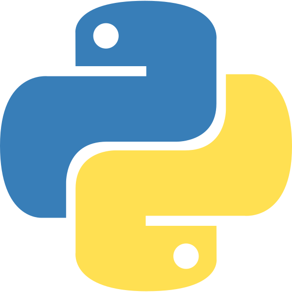
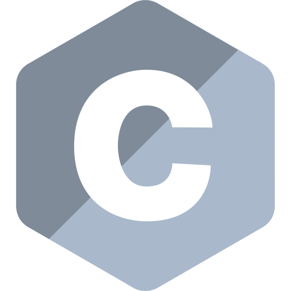
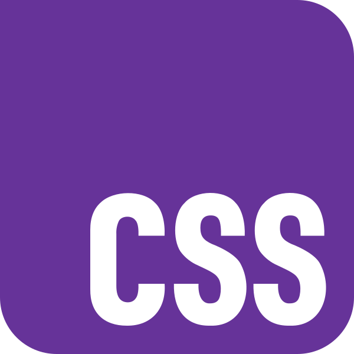
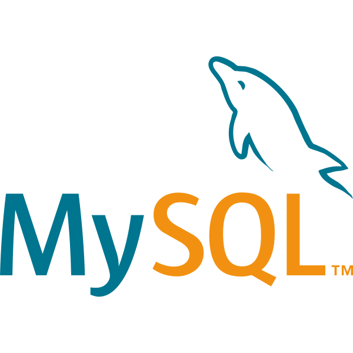
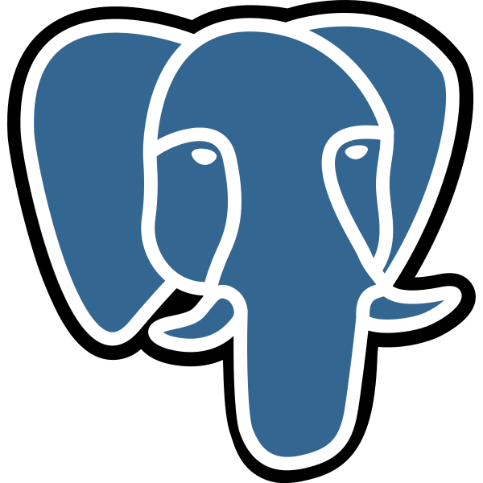

Gerenciamento de Arquivo
Sistema para gerenciar arquivos de forma eficiente e automática.
- Python
Crio projetos de sistemas e busco aprendizado em automação e sistemas com integrações completas entre databases e servidores
Tenho apreciação por automação e análise de dados e busco criar soluções inovadoras

01 / Sobre
Sou estudante de Ciência da Computação e aplico meus conhecimentos em projetos práticos e expando meu estudo com áreas relacionadas que me atraem, busco expêriencia prática em estágios.
02 / Staks

Python
C JavaScript
JavaScript

CSS
MySQL
PostgreSQL03 / Projetos
Sistema para gerenciar arquivos de forma eficiente e automática.
Pequeno sistema ERP para gerenciar o estoque de produtos.
Aplicação para gerenciar tarefas pendentes e visualização de progresso.
04 / Tem algo em mente?
Tem algum projeto que queira contribuição ou precisa de algum serviço?